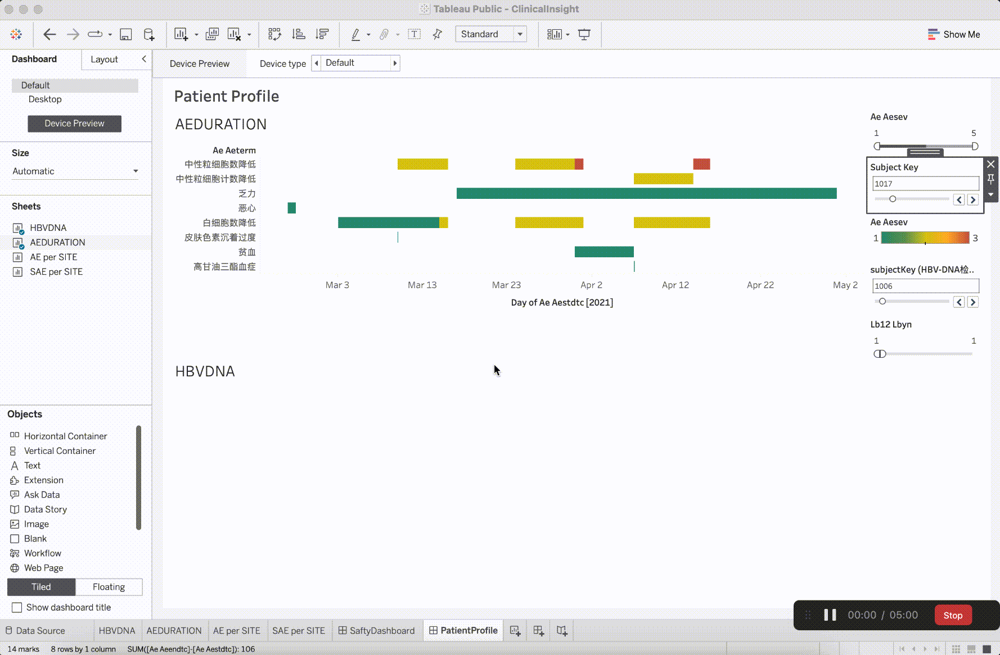
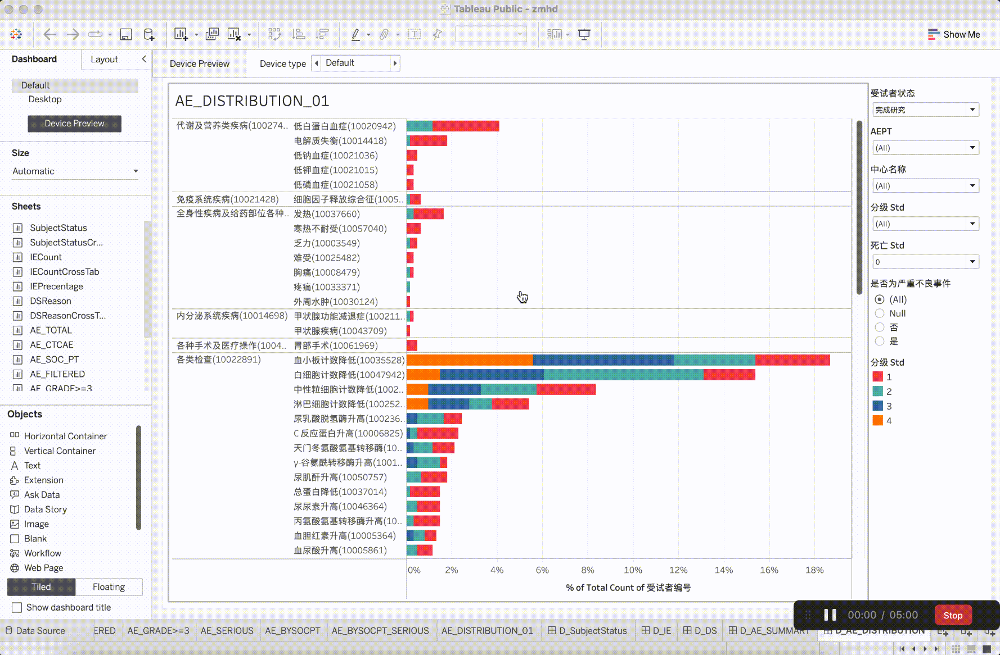

06
Quantative Analysis：Benchmarking analysis
Quantative Analysis：Benchmarking analysis
Why I Use Benchmarking Analysis?
Benchmarking can provide an efficient and effective means for a firm to take the best ideas from other
firms, integrate them into their own, and take actions that may provide it with a strong advantage over
their competitors.
1. Products need to Be Benchmarked
In this quantitative research, I selected five representative products in the field of medical statistics,
namely SAS Viya, Plotly Dash, SPSSPRO, JMP Clinical, and Tableau. I chose them individually because they
have significant influence in the life science professionals' domain and are recognized by global
associations such as DIA and software user groups in life science like PharmaSUG. The factors contributing
to their influence include efficiency and speed, collaboration capabilities, scalability, advanced
analytics, model deployment, integration with other tools, and user-friendly interfaces.

benchmarking Products
2. Statistics processes dimension that need to be benchmarked, and its explanation:
- a. Data Management: Utilize common methods such as merging,
concatenating, or joining datasets based on shared variables. Choose the appropriate join type (e.g.,
inner join, outer join, left join, right join) depending on the analysis nature and data relationships.
- b. Data Transformation: Convert data into a suitable format and
normalize or standardize it if necessary.
- c. Exploratory Data Analysis (EDA): Proficiency in exploratory
analysis is crucial for data scientists. They employ EDA to analyze datasets, summarize key
characteristics, and utilize data visualization methods. EDA helps in determining the best approach to
manipulate the data source for desired insights, facilitating the identification of patterns, anomalies,
hypothesis testing, and assumption examination.
- d. Interactive Graphs & Data Visualization: Data visualization
is pivotal for simplifying complex datasets and effectively communicating insights. It enables users to
identify patterns, trends, and anomalies, fostering a deeper understanding of the data. Ultimately, it
plays a crucial role in facilitating informed decision-making by transforming data into visual
representations.
- e. Medical Modeling Development: Statistical models like
Kaplan-Meier Survival Curve, Ridit Analysis, and Chi-Square Test are commonly used in clinical research.
- f. Decision Building with AI, ML, Modeling: Clinical
statisticians can leverage these tools to gain deeper insights from clinical data, identify patterns, and
enhance predictive modeling in areas such as patient outcomes and treatment efficacy.
Tableau
Product concept: A powerful data visualization tool that enables users to create interactive and shareable
dashboards, allowing for intuitive exploration and understanding of complex datasets.
Pros:
1. Has basic dataset processing capabilities and strong capabilities in visualizing data.
Cons:
1. However, it performs weakly in medical scenarios and lacks accumulated experience in medical
modeling.

Join Dataset


Data visualization
SAS Viya
https://azureuse011456.my-trials.sas.com/SASDataExplorer/
Product Concept: SAS Viya is a robust analytics platform designed to empower organizations with efficient,
collaborative, and scalable data analysis, machine learning deployment, and advanced analytics
capabilities.
Pros:
It offers advanced analytics, scalability, and efficient collaboration for diverse life science
professionals.
customization of figures.
Cons:
Its extensive functionalities may require a steeper learning curve for some users.
Plotly Dash
https://chart-studio.plotly.com/create/?fid=plotly2_demo:417#/
Product Concept: Low/No Code mode. The interface configuration capability based on Plotly is essentially
equivalent to the coding ability in Plotly.
Pros:
1. The model structure is fixed and clear, making it highly replicable.
2. High and relatively comprehensive customization of visualization, supporting strong customer
customization of figures.
Cons:
1. Supports straightforward data processing workflows, allowing for direct analysis based on tables.
2. However, lacks the accumulation of medical industry models and insights, as well as in-depth analyses
such as curve fitting, and model prediction analysis.

All visualizations use this configuration framework

Select analysis chart template

Per trace type per config

Simple data processing

Simple analysis- Linear regression
SPSSPRO
https://www.spsspro.com/prodraw/operation/4632787?name=AdverseR.csv
Product Concept: There is a complete data processing workflow. The configuration process is user-friendly,
and one can learn a lot about data flows from the platform. The approach to plotting is similar to
Tableau.
Pros:
1. The data flow processing is relatively comprehensive, providing essential data analysis workflows.
Cons:
1. Visual interactivity is not very strong.


Rich data processing workflow


Dataset processing and analysis

Accumulation of medical models

User-friendly configuration process, recommending limited chart types based on data
types and
quantities
JMP clinical
Product Concept: Offering advanced statistical analysis and visualization tools to streamline and enhance
the analysis of clinical trial data, facilitating data-driven decision-making in the pharmaceutical and
healthcare sectors.
Pros:
1. Emphasizing annotated visualization generation and exploratory analysis
Cons:
1. Do not emphasize data processing and manipulation.
Conclusion
1. The current research has not assessed the effectiveness of data results, only evaluating the product
layout from a functional and process perspective. Further in-depth research is needed to reveal the
professionalism presented by each product in the dimension of data analysis effectiveness.
2. Through research, an understanding of the complete life cycle process of data has been gained, and the
business flows generated based on this data cycle are widely recognized in the industry.

Statistics Process

Measurement Matrix
3. Mainstream, well-developed, and widely applicable data insights are based on the lifecycle of data.
Different
product lines may have slight variations in their emphasis on features.
- a. SAS Viya stands as a versatile solution in the data product
industry,
providing
an
end-to-end solution for comprehensive data insight scenarios.
- b. SPSS PRO in fundamental analytical capabilities,
demonstrating
outstanding
performance in exploring data distribution and generating descriptive statistics with a focus on data
validity.
- c. Plotly, JMP_Clinical, and Tableau exhibit strong
visualization
capabilities,
prioritizing
data interpretation and expression, though they show relatively weaker data processing capabilities.
- d. Among the mentioned mainstream products, SAS Viya stands out
in Modeling
and
Decision,
while the others exhibit less comprehensive performance. This suggests one of the potential areas for
future
improvement, which has not been thoroughly explored in this preliminary survey.
- i.In the research of other products, certain products may
have strengths in
specific medical modeling scenarios, but they lack a good user experience and functional applications.
Therefore,
these aspects do not contribute to the core competitiveness of the products.
- e. Within the statistical ecosystem, open-source R packages
provide
visualization
solutions for
specific key medical scenarios. It may be worthwhile to explore and follow up on these R packages in the
future. This
consideration assumes that the technology stack is determined to be based entirely on the R ecosystem.
- i. Focus on subgroup analysis.
- ii. Pay attention to Adverse Event dynamics.
- iii.Pay attention to laboratory insights, and so
on.
4. The mainstream visualization configuration methods generally fall into two categories:
- a. Filling data through an object-oriented approach, using a
Bottom-Up method. The
advantage lies in rapid generation, but the current technology stack is not easily adaptable to this
model.
Derivatively, filling data is tailored to specific scenarios, enabling faster generation of plots.
- b. Based on data, recommending objects in a Top-Down approach.
The advantage lies in
a well-initiated development with a favorable technology stack and good support for users sensitive to
data.
However, the interaction may be extensive, which is not conducive to the rapid generation of plots using
Plotly.
07
Potential Product Positioning Strategy
Potential Product Positioning Strategy
No Firm Does Everything the Best
1. Based on scenario templates for rapid generation, not open for user configuration, only for
initialization. At a coarse granularity, to discover significant security data issues.
- a. During the customer pitch process, we learned that medical
monitoring always accompanies the progress of clinical trials. However, there is no need to submit code,
and there is not a strong dependency on data validity checks.
- b. Opportunity points and breakthrough points: Improve insight
speed. Help enhance business volume for increased user engagement and revenue growth.
- c. Low Barriers to Entry: As is well known, configuring
functionality can be a very lengthy process, involving numerous details. Therefore, providing a
coarse-grained template encapsulation solution is currently the best choice. It can avoid the detailed
design and development of the configuration process and bypass the validation of data effectiveness.
- d. Not reinventing the wheel, leaving time and opportunities to
discover better industry best practices.
2. Leveraging the interface-equivalent coding capability based on the R ecosystem, providing users with a
basic plot configuration end is the optimal solution while offering the capability for configuration.
08
Journey Maps and User Flow Proposal
TJourney Maps and User Flow Proposal
1. Positioning Strategy 1: Quick launch and setup of MM plots are based on the encapsulation of business
scenarios,
reducing data exploration and increasing verification efficiency.
2. Positioning Strategy 2: MM Config
Proposal 1: Drag a Gallery chart here to use it as your starting point.

Proposal 1 E2E

Proposal 1 Config concept draft
Proposal 2: Click on the Basic Elements tab to build a chart element by element.

Proposal 2 E2E